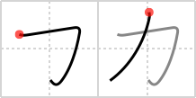

力
← →
power

Reading:
On-Yomi: リョク、リキ、リイ — Kun-Yomi: ちから
Heisig story:
With a little imagination, one can see a muscle in this simple, two-stroke character meaning power.
Heisig comment:
* As a primitive, either muscle or power can be used.
Koohii stories:
1) [lankydan] 23-8-2007(140): I always refer to the power of the KATAKANA "KA".
2) [stshores24] 10-7-2008(39): I have a very powerful muscle カ in my driveway!
3) [Viking101] 3-1-2010(23): As a primitive, I chose Arnold Schwarzenegger. Picture him saying California with his powerful accent (KA-lee-fornia).
4) [oyxoyx] 5-5-2011(19): The power of Goku: KA-mehamehaaaaaaa! (Katakana KA).
5) [DrWarrior12] 28-12-2007(12): You've got to have a lot of power to wield a sword with such a small blade (notice how the handle of the sword is about 5 times the size of the little blade on top?).